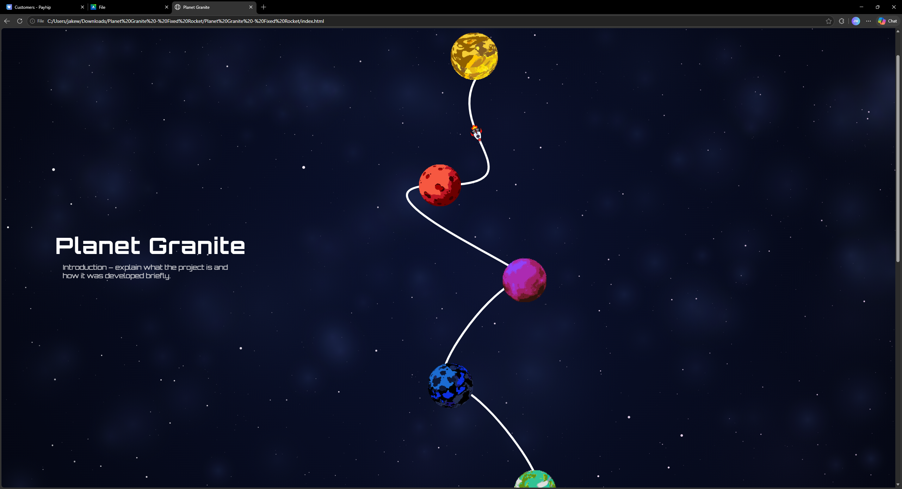
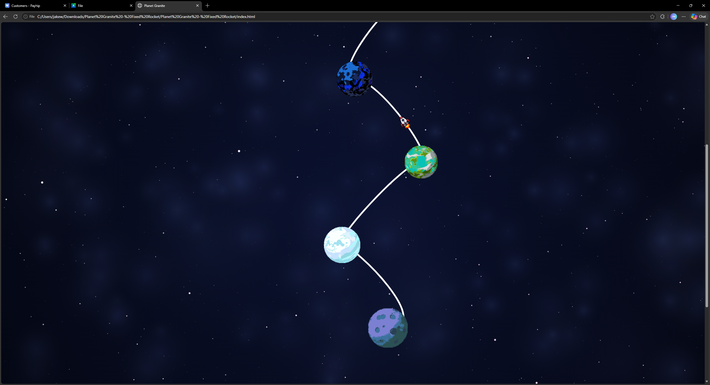

Blog team
The blog was developed collaboratively as an immersive space-themed experience designed to reflect the visual identity and atmosphere of the game. Instead of a traditional navigation system, we created an interactive layout where planets functioned as navigation points within a stylised universe background. This encouraged users to explore the site in a more visual and exploratory way, while still maintaining a clean, structured, and modern design.
Throughout development, Granite Playground and other LLM tools were used to support idea generation, experimentation, troubleshooting, and visual design decisions. The workload was shared across the team, with different members focusing on layout design, content pages, animation systems, and interactive elements to ensure consistent progress and a unified final product.

A major technical focus was the animated background system, built using the HTML5 canvas element and JavaScript Canvas 2D API. This system used multiple procedural layers including stars, dust particles, and nebula clouds. Depth effects, gradient lighting, and blending techniques were applied to create a more atmospheric and immersive visual environment. Performance was carefully considered throughout development, with optimisation techniques such as particle recycling, simplified calculations, and requestAnimationFrame() used to maintain smooth rendering across devices.
Another key feature was the rocket navigation system, which was designed to follow curved SVG paths as users scrolled through the page. During testing, issues with incorrect positioning and rotation caused the movement to feel inconsistent and broke immersion. To resolve this, the JavaScript logic and SVG path structure were refined, and multiple approaches using path length and scroll-based calculations were tested until the rocket movement aligned more accurately with the curve.

In addition, individual content pages were designed to preserve the overall space aesthetic while reducing background animation complexity. This helped improve readability and reduced visual distraction, ensuring the focus remained on the written content while still maintaining the immersive theme of the blog.

